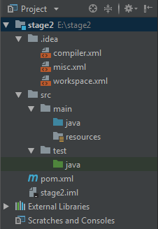

Методы
Подготовка проекта
Создайте проект с помощью maven.
- Откройте IntellijIDEA. Выберите пункт меню File, затем New, затем Project.
- В появившемся окне на панели слева выберите Maven. Нажмите Next.
- В поле groupId укажите "(ваш логин на гитхабе).github.io". В поле artifactId укажите "stage2". Нажмите Next.
- Проверьте что Project name содержит "stage2". Установите свойство Project location так, чтобы в нем был абсолютный путь к вашему репозиторию.
- Нажмите Finish.
У вас должен создаться проект со следующей структурой файлов:

- Содержимое папки с исходным кодом "src/main/java" будет компилироваться и компоноваться в запускаемую программу.
- Папка "src/main/resources" предназначена для хранения файлов с исходными данными.
- В папке с исходным кодом создайте класс Library. Он будет содержать методы для решения задач.
- В папке с исходным кодом создайте класс Program. Это вспомогательная программа для проверки методов из класса Library.
- Создайте метод main в классе Program по аналогии с методами main из задач прошлых лабораторных.
8307
Задача
Пользователь вводит слово (goal). Нужно напечатать на экран фразу "Мы стремимся к " и затем слово от пользователя.
- В классе Library реализуйте публичный статический метод task8307.
- Метод принимает в качестве аргумента 1 строку.
- Метод возвращает текст, который нужно напечатать на экран.
- В теле метода task8307 напечатайте в консоль решение задачи, используя значение аргумента в качестве исходных данных.
Код метода будет выглядеть так:
public class Library {
public static void task8307(String value) {
String res;
res = "Мы стремимся к " + value;
return res;
}
}
В методе main класса Program добавьте следующий код:
String result;
//вызов метода task1860 из класса Library
result = Library.task8307("знаниям");//литерал "знаниям" передан в качестве аргумента
System.out.println(result);
String goal = "цели";
//значение переменной goal передано в качестве аргумента
result = Library.task8307(goal);//внутри метода это значение будет доступно под именем value
System.out.println(result);
result = Library.task8307("результату");
System.out.println(result);
В результате запуска метода main класса Program, в консоли должен появиться текст:
Мы стремимся к знаниям
Мы стремимся к цели
Мы стремимся к результату
8813
Задача
Пользователь вводит фамилию и имя. Нужно оформить фразу по шаблону:
Меня зовут $lastName, $firstName $lastName.
- В классе Library реализуйте публичный статический метод task8813.
- Он принимает в качестве аргумента 2 строки.
- В теле метода task8813 напечатайте в консоль решение задачи, используя значения аргументов в качестве исходных данных.
Вызовите метод task8813 в методе main класса Program с различными аргументами:
Library.task8813("Джеймс", "Бонд");
Library.task8813("капитан", "Джек Воробей");
String firstName = "Александр";
String lastName = "Крюков";
Library.task8813(firstName, lastName);
В результате запуска метода main класса Program, в консоли должен появиться текст:
Меня зовут Бонд, Джеймс Бонд
Меня зовут Джек Воробей, капитан Джек Воробей
Меня зовут Крюков, Александр Крюков
5823
Задача
Пользователь вводит несколько значений. Вывести данный фрагмент текста, заменив названия переменных их значениями.
<circle cx="$CX" cy="$CY" r="$R" fill="$FILL"/>
- В классе Library реализуйте публичный статический метод task5823.
- Он принимает в качестве аргументов 3 целых числа и 1 строку
- В теле метода task5823 напечатайте в консоль решение задачи, используя значение аргументов в качестве исходных данных.
В методе main класса Program добавьте следующий код:
int coordinateX = 50;
Library.task5823(coordinateX, 50, 40, "yellow");
coordinateX = 400;
Library.task5823(coordinateX, 300, 200, "green");
coordinateX = 254;
String colorOrange = "#cc6600";
Library.task5823(coordinateX, 356, 100, colorOrange);
В результате запуска метода main класса Program, в консоли должен появиться текст:
<circle cx="50" cy="50" r="40" fill="yellow"/>
<circle cx="400" cy="300" r="200" fill="green"/>
<circle cx="254" cy="356" r="100" fill="#cc6600"/>
2772
Задача
Пользователь вводит несколько значений. Вывести данный фрагмент текста, заменив названия переменных их значениями. $A, $B, $C на введенные значения a, b, c соответственно.
Квадратное уравнение $A*x*x + $B*x + $C = 0.
Его дискриминант вычисляется по формуле: d = $B*$B - 4*$A*$C
- В классе Library реализуйте публичный статический метод task2772.
- Он принимает в качестве аргументов 3 целых числа.
- В теле метода task2772 напечатайте в консоль решение задачи, используя значение аргументов в качестве исходных данных.
В методе main класса Program добавьте следующий код:
Library.task2772(1, 2, 3);
Library.task2772(-3, 0, 2);
В результате запуска метода main класса Program, в консоли должен появиться текст:
Квадратное уравнение 1*x*x + 2*x + 3 = 0.
Его дискриминант вычисляется по формуле: d = 2*2 - 4*1*3
Квадратное уравнение -3*x*x + 0*x + 2 = 0.
Его дискриминант вычисляется по формуле: d = 0*0 - 4*-3*2
В предыдущих заданиях на простых задачках вы тренировались в оформлении метода: передаче аргументов и возвращении значения значении. Когда же на практике нужно применять методы? Ответ на этот вопрос дан в главе 7.1 "Разумные причины создания методов" части II книги "Совершенный код".
(открыть в новой вкладке)
7611
Задача
Вычислить результат по формуле x + 7.
- В классе Library реализуйте публичный статический метод task7611.
- Он принимает в качестве аргументов 1 действительное число.
- Он возвращает действительное число
- В теле метода верните результат решения задачи, используя значение аргумента в качестве исходных данных
Код метода будет выглядеть так:
public class Library {
public static double task7611(double x) {
double res;
res = x + 7;
return res;
}
}
В методе main класса Program добавьте следующий код:
double result;
result = Library.task7611(11.13);//в качестве аргумента передано число
System.out.printf("%.4f\n", result);
double value = -79.19;
result = Library.task7611(value);//в качестве аргумента передано значение переменной
System.out.printf("%.4f\n", result);
System.out.printf("%.4f\n", Library.task7611(0));//результат используется без промежуточной переменной
В результате запуска метода main класса Program, в консоли должен появиться текст:
18,1300
-72,1900
7,0000
4776
Задача
Вычислить результат по формуле.
1-sin2(xRad)
- В классе Library реализуйте публичный статический метод Task4776.
- Он принимает в качестве аргумента 1 действительное число и возвращает действительное число.
- В теле метода вычислите результат и верните его
В методе main класса Program добавьте следующий код:
double result;
result = TaskCs4776.Library.task4776(69.97);
System.out.printf("%.4f\n", result);
//для наглядности проверки можно писать дополнительные условия
if (0.9395 <= result && result <= 0.9396) {
System.out.println("Верно");
} else {
System.out.println("Результат некорректный");
}
result = TaskCs4776.Library.task4776(31);
System.out.printf("%.4f\n", result);
System.out.printf("%.4f\n", TaskCs4776.Library.task4776(90));
В результате запуска метода main класса Program, в консоли должен появиться текст:
0,9395
Верно
0,5150
1,0000
4757
Задача
Даны два числа, нужно вычесть из большего числа меньшее.
| Номер теста | Исходные данные | Результат |
|---|
| first | second |
| 1 | 99 | 17 | 82
|
| 2 | 14 | 5 | 9
|
При работе с методами вы можете встретить ошибку компиляции "missing return statement". Пример когда у вас программа без ветвлений:
public static int Sum(int a, int b){
int result;
result = a + b;
}
В этом случае для исправления нужно только дописать команду "return result;" как в примере ниже:
public static int Sum(int a, int b){
int result;
result = a + b;
return result;//эта команда добавлена
}
Если же ваша программа содержит ветвления (if), то ошибка "missing return statement" возникает в случае когда вы написали метод примерно так:
public static int diff(int a, int b) {
int result;
if (a < b) {
result = b - a;
return result;
}
if (b < a) {
result = a - b;
return result;
}
}
При компиляции, компьютер выполняет предварительный анализ кода. В этом примере он видит что команды return находятся внутри ветвлений. Для компьютера возможна ситуация, когда оба условия if будут ложны, а значит ни одна из команд return не будет выполнена. В данном примере - когда a строго равно b. Первый вариант исправления - предусмотреть return "на всякий случай" как в примере ниже:
public static int diff(int a, int b) {
int result;
if (a < b) {
result = b - a;
return result;
}
if (b < a) {
result = a - b;
return result;
}
return 0;//на всякий случай
}
Другой вариант исправления - использовать if else. Если условие будет ложно, то будут выполнены команды из else. Если истинно - команды из if. Компьютер считает, что хотя бы одна из команд return будет выполнена Как в примере ниже:
public static int diff(int a, int b) {
int result;
if (a < b) {
result = b - a;
return result;
}
else {//здесь раньше был if (b < a)
result = a - b;
return result;
}
}
3597
Задача
Даны вещественные числа a, b, c. Если a равно 0, вернуть сообщение об ошибке "Уравнение не является квадратным". Найдите в прошлых работах формулу для вычисления дискриминанта, вычислите его и напишите одно из трех сообщений в зависимости от полученного значения.
- Если дискриминант равен 0, то у уравнения один вещественный корень.
- Если дискриминант меньше 0, то у уравнения нет вещественных корней.
- Если дискриминант больше 0, то у уравнения два вещественных корня.
- В классе Library реализуйте публичный статический метод task3597.
- Он принимает в качестве аргумента 3 действительных числа и возвращает строку.
- В теле метода верните результат решения задачи, используя значения аргументов в качестве исходных данных.
В методе main класса Program добавьте следующий код:
String result;
result = Library.task3597(1, 2, 3);
System.out.println(result);
result = Library.task3597(11, 13, 19);
System.out.println(result);
double a, b, c;
a = 3;
b = 17;
c = 5;
System.out.println(Library.task3597(a, b, c));
a = 5;
b = 31;
c = 29;
System.out.println(Library.task3597(a, b, c));
System.out.println(Library.task3597(3, 6, 3));
System.out.println(Library.task3597(1, 2, 1));
System.out.println(Library.task3597(0, 7, 13));
В результате запуска метода main класса Program, в консоли должен появиться текст:
Вещественных корней уравнения 1.0x^2 + 2.0x + 3.0 = 0 нет
Вещественных корней уравнения 11.0x^2 + 13.0x + 19.0 = 0 нет
У уравнения 3.0x^2 + 17.0x + 5.0 = 0 два вещественных корня
У уравнения 5.0x^2 + 31.0x + 29.0 = 0 два вещественных корня
Уравнение 3.0x^2 + 6.0x + 3.0 = 0 имеет один корень
Уравнение 1.0x^2 + 2.0x + 1.0 = 0 имеет один корень
Данное уравнение не является квадратным
6573
Задача
Найти произведение всех целых чисел от А до B включительно. Значение A может быть как меньше, так и больше B. Для хранения результата используйте переменную типа long. Этот тип поддерживает очень большие целые числа.
- В классе Library реализуйте публичный статический метод task6573.
- Он принимает в качестве аргумента 2 целых числа и возвращает большое целое число.
- В теле метода нужно вернуть результат решения задачи, используя значения аргументов в качестве исходных данных.
В методе main класса Program добавьте следующий код:
long result;
result = Library.task6573(8, 13);
System.out.println(result);
result = Library.task6573(13, 8);
System.out.println(result);
int from, to;
from = 159;
to = 161;
result = Library.task6573(from, to);
System.out.println(result);
from = -2;
to = 600;
System.out.println(Library.task6573(from, to));
System.out.println(Library.task6573(648, 648));
System.out.println(Library.task6573(35, 24));
В результате запуска метода main класса Program, в консоли должен появиться текст:
1235520
1235520
4095840
0
648
399703747322880000
3355
Задача
Пользователь вводит число total. Выведите на экран в столбик все целые числа от 1 до total включительно. В начале программы должно появиться слово "Введение", а после всех чисел - слово "Заключение". Перед каждым числом нужно написать слово "Глава".
- В классе Library реализуйте публичный статический метод task3355.
- Метод принимает одно целое число как аргумент и возвращает строку.
| Номер теста | Исходные данные (total) | Результат |
|---|
| 1 | 0 | Введение
Заключение
|
| 2 | 1 | Введение
Глава 1
Заключение
|
| 3 | 2 | Введение
Глава 1
Глава 2
Заключение
|
| 4 | 3 | Введение
Глава 1
Глава 2
Глава 3
Заключение
|
| 5 | 4 | Введение
Глава 1
Глава 2
Глава 3
Глава 4
Заключение
|
| 6 | 6 | Введение
Глава 1
Глава 2
Глава 3
Глава 4
Глава 5
Глава 6
Заключение
|
| 7 | 5 | Введение
Глава 1
Глава 2
Глава 3
Глава 4
Глава 5
Заключение
|
| 8 | 20 | Введение
Глава 1
Глава 2
Глава 3
Глава 4
Глава 5
Глава 6
Глава 7
Глава 8
Глава 9
Глава 10
Глава 11
Глава 12
Глава 13
Глава 14
Глава 15
Глава 16
Глава 17
Глава 18
Глава 19
Глава 20
Заключение
|
3147
Задача
Пользователь вводит символ (needle), который может быть одной из букв: a,b,c,d,e,f,g,h. Нужно выводить все эти буквы в строчку, пока не будет выведена буква X.
- В классе Library реализуйте публичный статический метод task1292.
- Он принимает символ и возвращает строку.
| Номер теста | Исходные данные (needle) | Результат |
|---|
| 1 | a | a
|
| 2 | b | ab
|
| 3 | d | abcd
|
| 4 | h | abcdefgh
|
| 5 | i | abcdefgh
|
6948
Задача
Пользователь вводит данные - целые числа, разделенные пробелами. Найти среднее арифметическое введенных элементов. Вывести с точностью 6 знаков после запятой.
- В классе Library реализуйте публичный статический метод task6948.
- В качестве аргумента принимает массив целых чисел.
- Возвращает действительное число.
Добавьте в метод main класса Program следующий код
int[] values;
values = new int[]{9, 8, 9, 1, 1, 5, 1, 1};
double result;
result = Library.task6948(values);
System.out.printf("%.6f\n", result);
values = new int[]{1, 2, 3, 4, 1, 3, 4, 4, 4, 4};
result = Library.task6948(values);
System.out.printf("%.6f\n", result);
result = Library.task6948(new int[]{5, 5, 5, 5, 5});
System.out.printf("%.6f\n", result);
result = Library.task6948(new int[]{});
System.out.printf("%.6f\n", result);
int[] array = new int[]{1, 9, 1, 30, 9, 1, 100};
System.out.printf("%.6f\n", Library.task6948(array));
System.out.printf("%.6f\n",
Library.task6948(new int[]{
100000, 1, 1
})
);
В результате запуска метода main класса Program, должен получиться такой результат:
4,375000
3,000000
5,000000
0,000000
21,571429
33334,000000
8920
Задача
Пользователь вводит фрагмент K и данные - символы, разделенные пробелами. Посчитать сколько раз встречается фрагмент K в массиве.
- В классе Library реализуйте публичный статический метод task8920
- Метод принимает два аргумента: строку и массив строк
- Метод возвращает число
| Номер теста | Исходные данные | Результат |
|---|
| K | data |
| 1 | e | q w e r q w | 1
|
| 2 | t | q w e r q w e r q w e | 0
|
| 3 | w | e w w w w w | 5
|
| 4 | q | r r r r r r | 0
|
| 5 | qw | qw er ty qw | 2
|
1995
Задача
Пользователь вводит два массива данных - фрагменты текста. Вывести на экран индекс элемента, на котором массивы начинают отличаться. Если длина массиов отличается сообщите тот индекс, который существует только в одном из массивов.
- В классе Library реализуйте публичный статический метод compareArrays.
- Он принимает в качестве аргументов 2 массива целых чисел
- Он возвращает строку
- В теле метода сформируйте ответ и верните его. Используйте значения аргументов в качестве исходных данных.
В методе main класса Program добавьте следующий код:
int[] standard = new int[]{5, 4, 3, 2, 1};
int[] array = new int[]{5, 4, 3, 2, 1};
String result = Library.compareArrays(standard, array);
System.out.println(result);
array = new int[]{5, 4, 3};
result = Library.compareArrays(standard, array);
System.out.println(result);
System.out.println(Library.compareArrays(
new int[]{9, 8, 7, 6},
new int[]{9, 8, 7, 6, 5}
));
standard = new int[]{9, 8, 7, 6, 5};
array = new int[]{9, 111, 7};
System.out.println(Library.compareArrays(standard, array));
array = new int[]{6, 5, 4, 3, 2, 1};
System.out.println(Library.compareArrays(
new int[]{6, 5, 0, 3},
array
));
В результате запуска метода main класса Program, в консоли должен появиться текст:
Массивы одинаковы
Массивы начинают различаться на индексе 3
Массивы начинают различаться на индексе 4
Массивы начинают различаться на индексе 1
Массивы начинают различаться на индексе 2
7759
Задача
Пользователь вводит данные - целые числа, разделенные пробелами. Найти абсолютное отклонение каждого элемента от среднего арифметического данных значений.
- В классе Library реализуйте публичный статический метод task7759
- Метод принимает один аргумент - массив целых чисел
- Метод возвращает массив действительных чисел
| Номер теста | Исходные данные (numbers) | Результат |
|---|
| 1 | 9 8 9 1 1 5 1 1 | 4,6250 3,6250 4,6250 3,3750 3,3750 0,6250 3,3750 3,3750 |
| 2 | 1 2 3 4 1 3 4 4 4 4 | 2,0000 1,0000 0,0000 1,0000 2,0000 0,0000 1,0000 1,0000 1,0000 1,0000 |
| 3 | 5 5 5 5 5 | 0,0000 0,0000 0,0000 0,0000 0,0000 |
| 4 | | |
| 5 | 1 1 1 9 9 100 30 | 20,5714 20,5714 20,5714 12,5714 12,5714 78,4286 8,4286 |
| 6 | 1000000 1 1 | 666666,0000 333333,0000 333333,0000 |
2936
Задача
Пользователь вводит число M и данные - целые числа, разделенные пробелами. Умножить все элементы массива на M.
- В классе Library реализуйте публичный статический метод Task2936.
- Он принимает в качестве аргументов 1 действительное число и массив действительных чисел.
- Методв возвращает массив действительных чисел.
- В теле метода создайте новый массив и заполните его значениями, которые получатся в результате решения задачи.
- Массив, который был передан в качестве аргумента, измениться не должен
- В методе main класса Program добавьте код для проверки:
double[] data, result;
data = new double[]{9, 8, 7, 6, 5, 4};
result = Library.task2936(31, data);
System.out.println("При умножении массива");
int i = 0;
while (i < data.length) {
System.out.print(data[i] + " ");
i++;
}
System.out.println("\nна число 31, получился массив ");
i = 0;
while (i < result.length) {
System.out.print(result[i] + " ");
i++;
}
В результате запуска метода main должен получиться следующий результат:
При умножении массива
9.0 8.0 7.0 6.0 5.0 4.0
на число 31, получился массив
279.0 248.0 217.0 186.0 155.0 124.0
3539
Задача
Пользователь вводит данные - целые числа, разделенные пробелами. Найти минимальное число и вычесть его из всех элементов массива.
- В классе Library реализуйте публичный статический метод Task3539
- Он принимает в качестве аргумента массив действительных чисел
- В теле метода создайте новый массив и заполните его значениями, которые получатся в результате решения задачи.
- Массив, который был передан в качестве аргумента, измениться не должен
- В методе main класса Program добавьте код для проверки:
double[] data = new double[]{4, 2, 3, 4, 3, 2};
double[] result = Library.task3539(data);
System.out.println("Исходный массив:");
int i = 0;
while (i < data.length) {
System.out.print(data[i] + " ");
i += 1;
}
System.out.println("\nРезультат обработки:");
i = 0;
while (i < result.length) {
System.out.print(result[i] + " ");
i += 1;
}
В результате запуска метода main должен получиться следующий результат:
Исходный массив:
4.0 2.0 3.0 4.0 3.0 2.0
Результат обработки:
2.0 0.0 1.0 2.0 1.0 0.0
2121
Задача
Даны два числа: P и Q. Нужно сравнить их.
- В классе Library реализуйте публичный статический метод Task2121.
- Он принимает два целых числа.
- Метод возвращает логическое значение.
- Если P <= Q, метод должен вернуть true
- Если Q < P, метод должен вернуть false
- В методе main класса Program добавьте код для проверки:
int p = 0, q = 7;
boolean result = Library.Task2121(p, q);
System.out.println(result);
System.out.println(Library.Task2121(14, 9));
System.out.println(Library.Task2121(5, 5));
В результате запуска метода main должен получиться следующий результат:
true
false
true
Метод для решения задачи будет выглядеть так:
public static boolean Task2121(int P, int Q) {
if (P <= Q) {
return true;
} else {
return false;
}
}
Если для ответа вам достаточно одного логического выражения, то метод можно сократить до:
public static boolean Task2121(int P, int Q) {
return P <= Q;
}
6401
Задача
A и B обозначают границы интервала. Нужно проверить, принадлежит ли значение X указанному интервалу.
- В классе Library реализуйте публичный статический метод Task6401.
- Он принимает три действительных числа: A, B, X и возвращает логическое значение.
- Если X принадлежит интервалу от A до B включительно, метод должен вернуть значение true.
- Если X за пределами интервала от A до B включительно, метод должен вернуть значение false.
- Если A < B, значит интервал от A до B. Если B < A, значит интервал от B до A.
- В методе main класса Program добавьте код для проверки:
double a = -2, b = 7;
boolean result;
double x = -10;
result = Library.Task6401(a, b, x);
if (result) {
System.out.println(x + " принадлежит интервалу");
} else {
System.out.println(x + " за пределами интервала");
}
result = Library.Task6401(b, a, x);
if (result) {
System.out.println(x + " принадлежит интервалу");
} else {
System.out.println(x + " за пределами интервала");
}
x = 0;
if (Library.Task6401(-2, 7, x)) {
System.out.println(x + " принадлежит интервалу");
} else {
System.out.println(x + " за пределами интервала");
}
if (Library.Task6401(7, -2, x)) {
System.out.println(x + " принадлежит интервалу");
} else {
System.out.println(x + " за пределами интервала");
}
System.out.println(Library.Task6401(-2, 7, 15));
System.out.println(Library.Task6401(-2, 7, 4));
В результате запуска метода main должен получиться следующий результат:
-10.0 за пределами интервала
-10.0 за пределами интервала
0.0 принадлежит интервалу
0.0 принадлежит интервалу
false
true
7581
Задача
Определить, присутствует ли в данном массиве символ "x". Чтобы определить, что символ отсутствует, сравнивайте каждый элемент массива с эталоном "x". Если они равны, тогда возвращайте значение true. Если весь массив был просмотрен, а равных элементов не было найдено, верните false.
- В классе Library реализуйте публичный статический метод Task7581.
- Он принимает массив строковых значений и возвращает логическое значение.
- В методе main класса Program добавьте код для проверки:
String[] arr = "a;s;d;f".split(";");
boolean result = Library.Task7581(arr);
System.out.println(result);
arr = new String[]{"z", "x", "c", "v", "x"};
System.out.println(Library.Task7581(arr));
result = Library.Task7581("zx;df;ty;jk".split(";"));
System.out.println(result);
System.out.println(
Library.Task7581(
"q;a;z;w;s;x;e;d;c".split(";")
)
);
System.out.println(Library.Task7581(new String[0]));
В результате запуска метода main должен получиться следующий результат:
false
true
false
true
false
Версия 20240202. Подборка задач, выбор порядка подачи и подготовка тестовых данных - Крюков Александр, Омск 2013-2024. Основной репозиторий